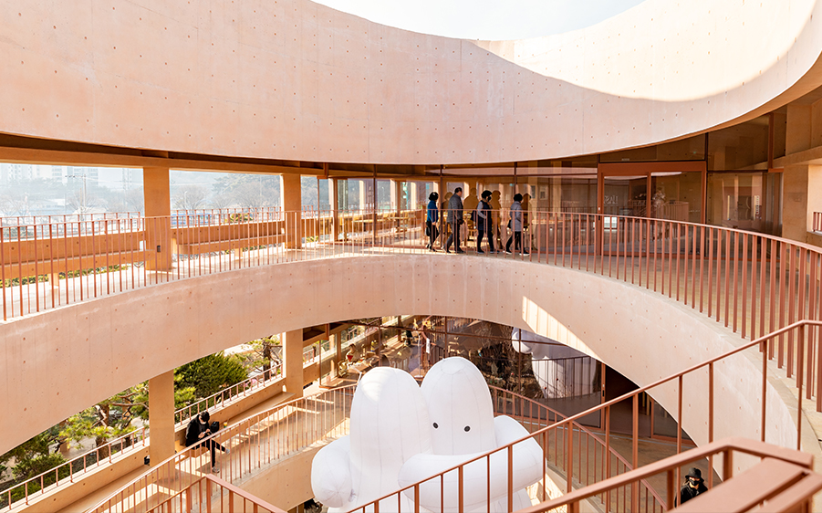
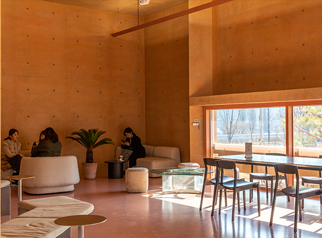
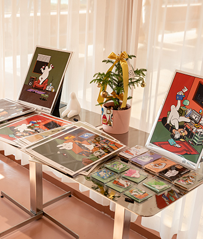
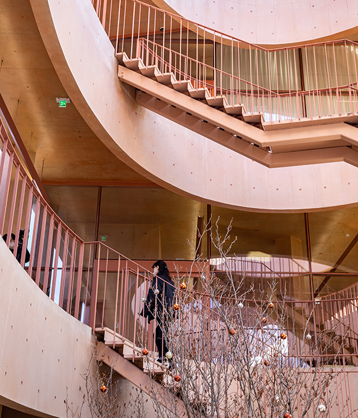
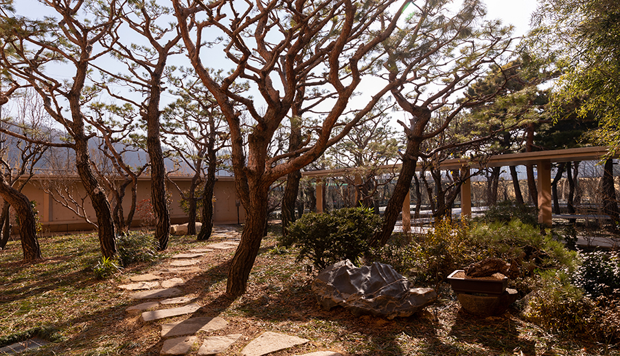
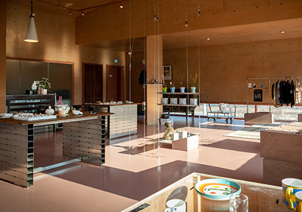
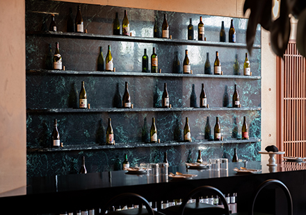

글. 정효정(여행작가) 사진. 조병우 영상. 최의인
대구그린파워 인근에서 가장 핫한 공간 mrnw. 자연과 건축이 어우러진 이 공간은 복합문화공간으로 문을 열었다. 정원의 개념으로부터 시작된 이곳은 거대한 건물과 자연이 어울린 장소다.
온라인 시대를 맞아 우리 삶의 선택지는 다양해졌다. 하지만 아무리 온라인이 발달해도 대체 하지 못하는 깊은 경험들이 있다. 바로 세련되고 편안한 공간에서 창의적인 경험을 하거나 맛있는 식음료를 맛보는 행위들이다. 그 때문에 사람들은 이젠 좋은 브랜드와 콘텐츠가 있다면 아무리 먼 곳이어도 찾아가고, 자신의 체험을 사진과 영상으로 공유한다. 최근 복합 F&B 공간이 늘어나는 이유다. 이런 공간의 최신 트렌드를 보여주는 곳이 바로 대구의 복합문화공간 mrnw(미래농원)다.
이곳을 방문하기 위해선 대구 도심에서 북쪽으로 차를 타고 20여분 가야 한다. 대구그린파워에서도 20여 분이 걸린다. 아무리 주변을 둘러봐도 농지와 비닐하우스뿐이다. 제대로 가는 게 맞는 건지 불안해질 무렵, 인디 핑크색의 노출 콘크리트 건물이 나타난다. ‘이런 곳까지 사람이 올까?’라는 생각이 들었지만, 이미 주차장엔 차량으로 가득했다. ‘장사는 목이 반이다’라는 말은 이미 옛말이 되어 버렸다는 실감이 났다.


 
대부분의 공간은 사용할 사람을 배려하고 생각하며 만들어진다. 하지만 mrnw은 조금 다르다. 이곳은 나무를 배려하고 생각하며 지은 건물이다. 그리고 사람은 나무가 주인인 이 공간을 방문해 나무가 선사하는 ‘여유’라는 선물을 즐긴다.
mrnw의 건축은 서촌 그라운드 시소를 건축한 SoA 건축 사무소가, 조경은 아모레퍼시픽 신사옥의 공중 정원을 디자인한 디자인스튜디오 Loci가 작업했다. 원래 이곳은 원예를 취미로 둔 아버지가 가꾼 조경수 농원이었다. 그걸 아들이 물려받아 카페, 전시 공간, 정원이 있는 복합문화공간으로 만들었다. 건설업을 하던 아버지는 평생 소나무, 모과나무, 향나무, 단풍나무, 배롱나무 등을 모아왔다고 한다. 나무 한 그루, 한 그루마다 그 나무를 옮겨 심은 아버지의 사연이 담겨 있다. 이 때문에 이곳을 복합문화공간으로 변모시킬 때도 mrnw의 원래 주인공인 나무가 우선이었다. 그래서 심겨 있는 나무를 가능한 한 그대로 살리고, 최소한의 위치만 조정하는 방식으로 건축과 조경을 설계했다.
도로와 농지, 비닐하우스 등으로 다소 어수선한 주변을 지나 mrnw의 입구에 들어서면 그때부터 나무의 세상이 펼쳐진다. 카페 파이퍼(piper)로 향하는 입구 공간에는 작고 아담한 연못이 있다. 거대한 콘크리트 건물이 어색하게 느껴지지 않는 이유는 마치 황토 화분을 떠올리게 하는 인디 핑크색의 콘크리트 색감 덕분이다. 차분한 색상이 대구의 내리쬐는 땡볕과도 사철 푸른 소나무와도 잘 어우러진다.
내부에는 기다란 타원형인 A동과 직사각형 건물인 B동이 서로 연결되어 있다. 가장 먼저 접하는 타원형 건물은 타원형 담벼락을 기준으로 가운데는 네모난 건물이, 양 끝에는 대칭되는 쌍둥이 정원이 있다. 이 건물은 철제 계단으로 직사각형 건물 B동으로 이어진다. B동은 바깥에서 봐서는 직사각형인데, 내부에는 타원형 중정을 품고 있다. 중정에서 고개를 들면 파란 하늘이 보인다. 이 타원형 공간은 1층부터 3층까지 빙글빙글 돌면서 점점 넓어진다. mrnw라는 바닷속에 깊게 잠긴 소라가 하늘을 향해 여행을 하는 모습이라고 한다. 그리고 주변의 나무들은 해초처럼 소라를 감싸고 있는 모양새다. 중정의 양쪽 끝에는 대칭형으로 카페 파이퍼와 와인바 스토크가 있다. 보통은 건물을 먼저 짓고 조경을 하지만, 여기는 정원에 맞춰 건물을 짓는 것이다 보니 건축가는 현장에서 수십 번 설계 도면을 고쳤다고 한다. 그 덕분에 방문객들은 건물 내 어느 창문을 통해 보더라도 마치 하나의 액자를 보듯이 아름다운 풍경을 마주할 수 있다.
B동의 바로 앞에는 소나무 정원이 있다. 이곳엔 6~7m는 족히 넘는 거대한 소나무들이 빼곡하게 심겨 있고 중간중간 히어리, 물철쭉, 생강나무 등이 심어져 있다. 부지의 담장에는 반사가 되는 스테인리스 철판을 설치했다. 이는 원래 정원보다 훨씬 깊어 보이는 효과와 함께 외부 도로의 어수선한 소음으로부터 공간을 분리하는 효과가 있다. 이 정원은 바닥에서 살짝 띄운 메탈 브리지로 동선이 짜여 있어서 마치 나무 사이를 떠다니는 기분이다. 메탈 브리지를 따라 걷다 보면 기존의 축사와 자재창고를 리모델링한 공간과 분홍빛 의자가 나온다.
소나무 정원에는 거위도 두 마리 살고 있다. 원래 세 마리였지만 얼마 전 한 마리가 가출했다는 가슴 아픈 소식을 들었다. 옛날엔 집을 지키기 위해 거위를 길렀다고 할 정도로 거위는 용맹을 자랑하는 동물이다. 방문객이 아무리 많아도 이 거위들은 기 한번 죽지 않고 고개를 빳빳이 들고 신나게 정원을 돌아다닌다. 그 거위들과 함께 소나무 숲 사이로 쏟아지는 자연광을 느끼며 평화롭게 오후의 커피를 마신다. 바깥은 차가 쌩쌩 지나다니는 시끄러운 도로지만, 지금 이곳은 마치 깊은 바다에 잠긴 것처럼 편안하기만 하다. 언택트 시대, 우리 생활의 많은 부분을 온라인으로 해결하지만, 지금과 같은 경험은 온라인으로는 할 수 없다. 그 때문에 이 시간이 더욱 소중하고 특별하게 느껴진다.
현재 메인 공간으로 활용되는 곳은 소나무 정원과 건물 A, B동이 있는 공간이지만, 주차장 너머에는 괄호의 정원이라 불리는 뒷밭이 있다. 이곳은 평소에는 오픈하지 않고, 이벤트가 있을 때 별도의 전시 프로그램 공간으로 사용된다.
이곳엔 향나무를 중심으로 산수유나무, 단풍나무, 팽나무, 모과나무, 미스김 라일락 등이 심겨 있고, 외벽에는 대나무를 심어 외부 공간과 분리하는 효과를 줬다. 중간에는 굴곡진 스테인리스로 된 공간이 있어 정원 안의 비밀 정원 같은 느낌을 준다. 이곳엔 수령 450년이 넘은 배롱나무도 있다. mrnw의 농원주는 한 집안의 제각각에 있던 이 나무를 무사히 옮겨 오기 위해 네 집의 담벼락을 허물고 다시 쌓는 과정을 거쳤다고 한다. 담벼락을 허물면서까지 나무를 옮겨올 필요가 있을까 싶지만, 사실 이 오래된 나무에는 mrnw의 철학이 담겨 있다.
지금까지 우리 사회는 고도성장을 이루었지만, 다른 선진국에 비해 환경과 자연을 소중히 여기며 살아오진 못했다. 하지만 미래의 우리는 달라야 하지 않을까. 이렇게 수령이 오랜 나무를 보존하고 후세에 남기려는 노력이 이어지는 것은, 지금과는 다른 미래를 열어가는 시도이기도 하다. 코로나 팬데믹과 기후 위기로 급격히 변하고 있는 우리의 삶. mrnw에서 자연이 주는 편안함과 여유를 경험하며 미래에 대한 희망을 품어본다.

 1
1층과 2층은 카페 파이퍼(piper)로, 3층은 전시공간으로 사용되며 카페 이용과 전시 고객만 입장이 가능하다.
 2
각종 이벤트와 카페 및 와인바 영업시간, 전시 일정 등은 mrnw 인스타그램에서 확인할 수 있다.